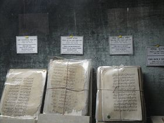

☰ History
In Mughal era, there was a garden house of Sheikh Enayet Ullah, the landlord of Jalalpur Porgona (district), in this place. Sheikh Enayet Ullah was a very charming person. He acquired a very big area in Kumortuli (Kumartuli) and included it in his garden house. Here he built a beautiful palace and named it "Rongmohol" (Rangmahal). He used to enjoy here keeping beautiful girls collected from the country and abroad, dressing them with gorgeous dresses and expensive ornaments. There is a saying that, the foujdar of Dhaka (representative of mughal emperor) in that time was attracted to one of the beautiful girls among them. He invited Sheikh Enayet Ullah in a party one night and killed him in a conspiracy when he was returning home. That girl also committed suicide in anger and sorrow. There was a grave of Sheikh Enayet Ullah in the north-east corner of the palace yard which was ruined in the beginning of the 20th century.
☰ Description and construction
Ahsan Manzil is one of the most significant architectural monuments of Bangladesh. The building structure was established on a raised platform of 1 meter, the two-storied palace measures 125.4m by 28.75m. The height of the ground floor is 5 meters and the height of the first floor is 5.8 meters. The thickness of the walls of the palace is about 0.78 meters. There are porticos of 5 meters height on the northern and southern sides of the palace. The building has a broad front-facing the Buriganga River. On the river side, an open spacious stairway leads right up to the second portal and on their stands the grand triple- arched portals. There was once a fountain in the garden in front of the stairs which does not exist today. All along the north and the south side of the building run spacious verandahs with an open terrace projected in the middle.
The palace Ahsan Manzil is divided into two parts: the eastern side and the western side. The eastern building with the dome is called the Rangmahal and the western side with the living rooms is called Andarmahal. The high octagonal dome is placed on the central round room. There is a large drawing room, card room, library, state room and two other guest rooms are located on the east side of the palace. The ballroom, the Hindustani room and few residential rooms are situated on the western side.
A beautiful vaulted artificial ceiling, made of wood, decorates the drawing room and the Jalsaghar. A splendid dining hall and few smaller rooms are placed on the west part. The floors of the dining and Darbar Halls are decorated with white, green and yellow colored ceramic tiles. The famous store room, where the valuables of the Nawabs used to be stored, was in the middle of the five rooms located in the western half of the ground floor. Along with those rooms a Darbar Hall or assembly hall and a chest room is also place there.
☰ Renovation
Recognizing the historical and architectural importance of the Ahsan Manzil, the government of Bangladesh took the initiative to renovate it. In 1985, Ahsan Manzil and its surroundings were acquired. After the completion of the renovation work in 1992 under the supervision of the Directorate of Public Works and Architecture, it was brought under the control of Bangladesh National Museum (20 September 1992). A museum has been established there.